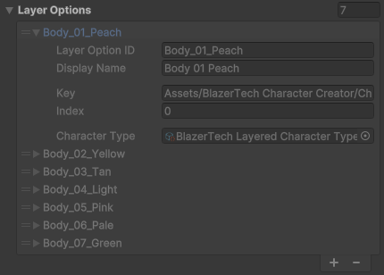
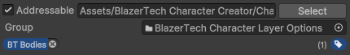
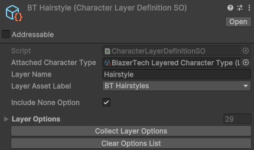

Character Layers
A Character Layer is a Scriptable Object that contains all available character spritesheets for a specific layer of a character.
To create a layer right click the project window and navigate to Create > BlazerTech > Character Management System > Layered Character Type > Character Layer
After the Character Layer has been created make sure to add it to the layers list inside your Layered Character Type.
Important
Only the Layered Character Type must be placed in a Resources folder. Everything else including Character Layers should be placed outside the Resources folder!
Character Layer Options
A Character Layer Option is a wrapper for a character spritesheet which allows for easy loading/unloading of the spritesheet when needed.
A list of Layer Options is kept in every Character Layer. The list represents all valid character spritesheets for a specific layer of the character.
Caution
All spritesheets used as layer options must be the exact same size as the Base Spritesheet set in the Layered Character Type or they will be invalid!

Layer Options are not added to the list manually. Instead go to the spritesheet you want to be included as an option for that layer and mark it as an Addressable in the Inspector. Then give it a label. Make sure the label the sprite has is the same label assigned in the Layer Asset label field of the Character Layer asset you created.

Tip
You can mark an entire folder as addressable and give it a tag which will automatically be applied to everything in the folder.
Once all your spritesheets are marked as addressable and have the correct tag, go back to your character layer asset and click the Collect Layer Options button to populate the Layer Options List.
Tip
The Layered Character Type also contains a Collect Layer Options button which will collect layer options for all layers in the Layers list.
Fields
Attached Character Type
The Layered Character Type the layer is meant to be used for.
Layer Name
The name of the layer. Used in the Character Creator when displaying character layer names.
Does NOT need to be unique.
Layer Asset Label
The Addressables label used to collect spritesheets and load them into Layer Options. The Character Management System uses Unitys Addressables package to dynamically load/unload sprites when needed. Select the label you'd like to use and make sure all character spritesheets meant to be used for this layer are marked as Addressable and have the same label.
Include None Option
if toggled a blank option will be added to the list of Layer Options. This will essentially allow a character to be created without using that layer since if the blank option is chosen, an empty sprite will be used.

Buttons
Collect Layer Options
Finds all sprites matching the Layer Asset Label and are the same size as the Base Spritesheet. If so it gets added it to the Layer Options list.
Clear Options List
Clears the Layer Options list.
Tip
Can be undo using control/command + Z